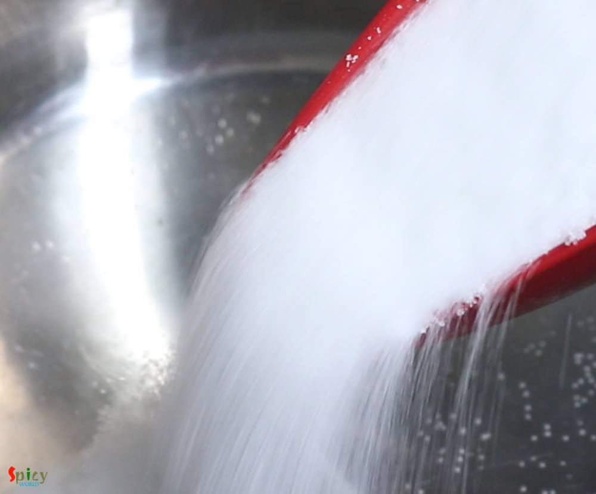

Simple and Easy Recipes
Malai Chum Chum / Lord Chom Chom
© 2016 Spicy World, Published on: Mar 11, 2019
You can find so many variety of Chum Chum recipe on internet. They all taste good, I can assure you that. Today what I am going to share is Kolkata special 'Lord Chom Chom' sweet recipe, in which cylindrical shaped Paneer will be cooked in sugar syrup then they will get a good coat of thick Malai (thickened milk) and Mawa (dried milk). In one word Chom Chom = a piece of heaven. Trust me I am not kidding! While staying in West Bengal, I have never made them in my kitchen. Because there are so many sweet shops where you can find them very easily. One lord chom chom costs around Rs. 15-20/-. If you follow this recipe step by step you will get very creamy and rich Malai Chum Chum which can be the show stopper of your next get together party.

Ingredients
- 2 liters of full fat milk.
- 1/4th cup of yogurt or curd or 5-6 Tablespoons of lemon juice.
- 6 cups of water.
- 2 cups of sugar.
- 1 liter of full fat milk for malai.
- 4-6 Tablespoons of sweetened condensed milk.
- 2 green cardamom or a pinch of cardamom powder.
- 5-6 Tablespoons of grated mawa or khoa.
- Some finely chopped pistachio.


Steps
Put 2 liters of milk in a saucepan, then turn on the gas on medium flame and keep stirring.
When the milk starts bubbling, reduce the flame to low and add beaten yogurt. Yogurt will leave large amount of paneer and also will make the chum chum soft. Turn off the flame and mix well.
After 1-2 minutes you will see the chena (paneer).
Immediately strain it in a strainer lined with a cotton cloth. Then wash it with cold water for few seconds. To get the spongy chena you have to do this 2 things quickly.
Squeeze the paneer with cloth gently 2-3 times with your hand, not more than that. Then hang it with kitchen tap for only 30 minutes. Do not make the paneer very dry.
In the meantime, mix 6 cups of water and 2 cups of sugar in a big, open vessel. Keep the vessel on medium flame and stir until sugar melts.
After 30 minutes take out the chena in a plate or flat surface.
First crumble the paneer gently with your hand, then lightly mash it with your fingers for 1-2 minutes.
Do not mash it hard, otherwise chom chom will become hard. You don't have to make the paneer very smooth.
Now make big lemon size balls out of it. Then start rolling them on a flat surface and give cylindrical shape. You will get 8-10 chom chom.
Drop them in sugar syrup while it is bubbling. For the spongy texture you will need thin syrup. If you are making in a medium sized pot, then add 4 at a time.
Cover the pan, cook on high heat for 10 minutes. They will become double in size.
Then reduce the heat to medium, flip them gently with spatula and again cook for 15 minutes.
Turn off the heat and let them cool down completely. Chom chom will shrink a bit when they will become cold.
In the meantime, heat another liter of milk in a separate pan.
Start stirring and boiling until it reduces to half.
Then add condensed milk and green cardamom. Mix well.
Cook until milk becomes thick. Neither too thick or too thin.
Then turn off the heat and remove the cardamom pod.
Now put one chom chom inside of your two palm and lightly press it to squeeze extra syrup.
Do the same with rest of them.
Now take out the malai in a flat pan or dish.
Arrange the squeezed chom chom in malai.
With the help of a spoon coat them well with malai by rotating them carefully.
Keep them in refrigerator for atleast 4-5 hours. For best result keep them 8 hours or overnight.
Before serving spread grated mawa or khoa all over them.
Add chopped pistachios in the middle of every chom chom for garnishment.
Your malai chum chum are ready to serve.
Serve them chilled.
")